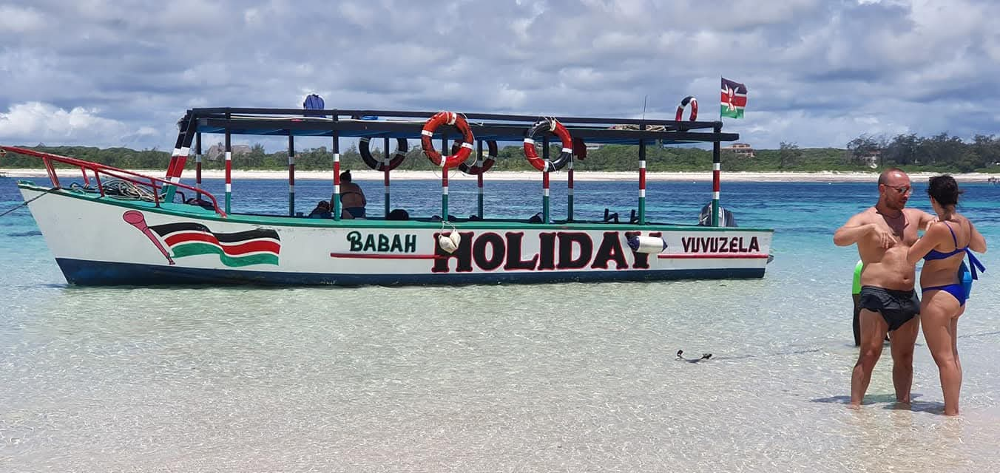
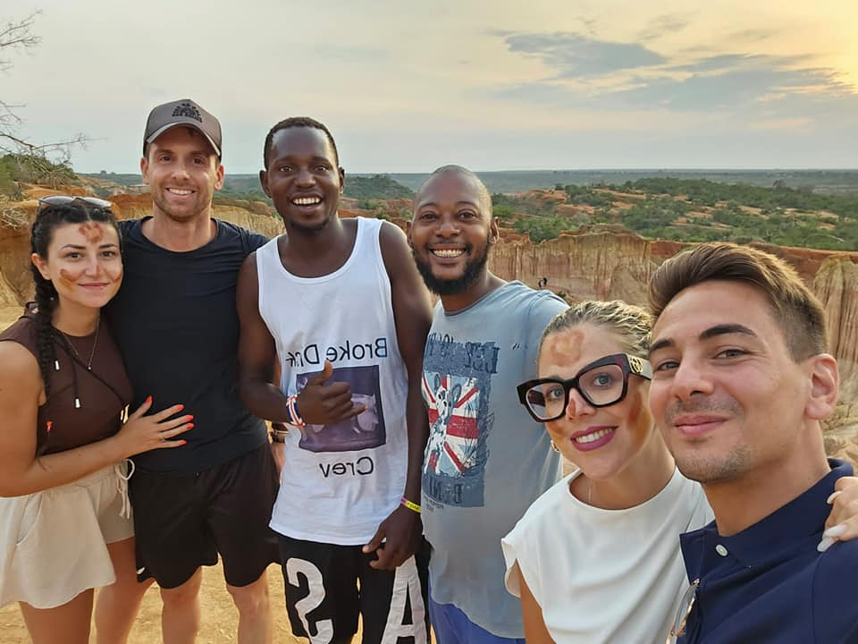

Escursione di giornata intera tra mare, natura e Marafa Canyon


Partenza dal vostro alloggio in direzione della splendida Spiaggia Dorata, famosa per la sua sabbia dai riflessi dorati e per il paesaggio incontaminato.
Tempo libero per rilassarsi, passeggiare sulla spiaggia e scattare fotografie indimenticabili.
Successivamente si prosegue verso la meravigliosa Isola di Robinson, raggiungibile in barca attraverso lagune e paesaggi naturali mozzafiato.
Arrivo previsto verso le ore 12:30. Dopo una passeggiata sull'isola sarà servito il pranzo a base di pesce con specialità locali come granchio, gamberi, pesce e riso al cocco.
Verso le ore 15:00 rientro in barca sulla terraferma e partenza per il suggestivo Canyon di Marafa, conosciuto anche come Hell's Kitchen.
Arrivo previsto verso le ore 16:00. Accompagnati da una guida locale specializzata esploreremo le spettacolari gole di arenaria modellate dal vento e dal tempo.
Al termine del percorso si salirà sul punto panoramico per ammirare il famoso tramonto di Marafa, quando le rocce assumono incredibili sfumature rosse e dorate.
Rientro al vostro alloggio previsto intorno alle ore 19:15.